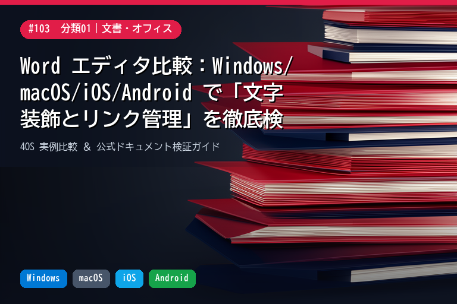

#103｜分類01: 文書作成・オフィス業務・事務作業 2026-11-28

Word エディタ比較：Windows/macOS/iOS/Android で「文字装飾とリンク管理」を徹底検証
「仕事で使うWord文書、デバイスを跨いで編集する際にレイアウトやリンクが崩れて困ったことはありませんか？」
ビジネスシーンにおいて、PCでの高度な執筆と、外出先でのモバイル確認・修正はセットで求められるスキルです。しかし、Windows、macOS、iOS、Androidの4つのOSでは、標準アプリの挙動やPDFの扱い、さらにはリンクの動作まで、微妙に仕様が異なります。
この記事では、主要な4OSにおける「文字装飾」と「ハイパーリンク管理」の実践手順を徹底比較します。各プラットフォームの特性を理解し、スムーズなマルチデバイス運用を実現するためのノウハウを解説します。
4OS比較早見表
| 機能・項目 | Windows 11 | macOS | iOS (iPhone/iPad) | Android |
|---|---|---|---|---|
| メインエディタ | Microsoft Word | Word / Pages | Word / Pages | Word / Googleドキュメント |
| 文字装飾 | 高度なスタイル定義 | 高度なスタイル定義 | タッチ操作に最適化 | 簡易的なスタイリング |
| リンク管理 | Ctrl+K / 右クリック編集 | Cmd+K / 右クリック編集 | タップ操作 / ショートカット連携 | ツールバー入力 / ブラウザ同期 |
| PDF結合/変換 | Microsoft Print to PDF | 「プレビュー」アプリ活用 | 「ファイル」アプリ経由 | Chromeブラウザ / Googleドライブ |
| 特筆事項 | Officeエコシステムで完全制御 | システムフォントとの親和性 | ショートカットアプリ連携 | Googleドキュメントとの親和性 |
1. Windows 11 での実例手順
Windows環境は、Officeエディタのフル機能を引き出せる「完全な制御」が可能なプラットフォームです。
文字装飾とハイパーリンク管理（Word）
- 文字装飾: 「ホーム」タブの「フォントグループ」から太字・斜体・色の変更を行います。「段落グループ」では、行間やインデントを詳細に数値指定して調整可能です。
- ハイパーリンク管理:
- 作成: テキストを選択し、「挿入」>「リンク（Ctrl+K）」をクリック。URLまたはローカルのファイルパスを入力します。
- バリデート: 右クリックメニューから「リンクの編集」を選択することで、破損したリンクの確認や修正がスムーズに行えます。
- 印刷/PDF出力: 「ファイル」>「エクスポート」または「名前を付けて保存（PDF）」を選択。Microsoft Edgeとの連携により、標準機能でプレビュー確認も可能です。
PDF 結合とサイズ削減
- PDF 結合: Word単体では複数ファイルの自動結合は非対応です。「Microsoft Print to PDF」で個別保存した後に手動統合する手法が基本となります。
- サイズ削減: 「ファイル」>「エクスポート」>「PDFを作成」の工程において、Word標準機能のみでは高度な画像圧縮設定は提供されていません（Adobe Acrobat等の外部ツールに依存）。
よくあるトラブルと解決法
- リンクがクリックできない: 「ファイル」>「オプション」>「詳細設定」でセキュリティレベルを確認してください。「スクリプト実行禁止」などが原因の場合があります。
- フォントが消える/乱れる: Windows固有フォントがPDFに埋め込まれていない場合に発生します。「エクスポート」時の設定で「すべてのフォントを埋め込む」を選択してください（バージョンによる）。
- マクロ実行エラー: セキュリティポリシーによりVBAマクロがブロックされることがあります。「ファイル」>「情報」>「セキュリティのレベル設定」から有効化を行ってください。
2. macOS での実例手順
macOSは、OfficeアプリとApple純正アプリ（Pages/プレビュー）をハイブリッドに使い分けるのが効率的です。
文字装飾とハイパーリンク管理（Word for Mac / Pages）
- Office Word: Windowsとほぼ同様の操作感ですが、Macのシステムフォント（San Francisco等）への自動変換は設定不可な点に注意が必要です。
- Pages (標準アプリ): 「書式付けツールバー」で装飾を行います。「テキストボックス」や「ハイパーリンク」機能も備えていますが、Word形式との互換性は複雑なレイアウトでは崩れやすいため注意してください。
PDF の結合とサイズ削減（プレビュー活用）
- PDF 結合: FinderでPDFを複数選択し、「ファイル」>「印刷」>「PDFとして保存」の操作、あるいは各ファイルをドラッグ＆ドロップして開いた状態でページ順序を変更する手法が有効です。
- サイズ削減: 「ファイル」>「印刷」からPDFプリンタを選択し、設定パネルで「画像の品質」を調整します。なお、公式仕様では標準機能での高度な圧縮（リサイズ）は非対応のため、必要に応じてAdobe Acrobat Reader DC等の無料版を併用してください。
よくあるトラブルと解決法
- Word ファイルが開けない/エラー: Pagesで開くと形式変換で崩れることがあります。Microsoft Storeから「Microsoft Word」を再インストールして対応してください。
- リンク先ファイルが見つからない: ネットワーク共有設定によりUNCパスが認識されない場合があります。「システム環境設定」>「ネットワーク」でSMBプロトコルを有効化してください。
- 印刷時のレイアウト崩れ: プリンタドライバーの仕様に依存します。「システム環境設定」>「プリンター & スキャナ」で推奨ドライバーを再インストールしてください。
3. iOS（iPhone / iPad）での実例手順
モバイル端末では、タッチ操作への最適化とクラウド連携が鍵となります。
文字装飾とハイパーリンク管理（Word for iOS / Pages）
- Word: 「ホーム」タブで基本装飾が可能ですが、PC版のような複雑なスタイル定義は制限されます。iPhone/iPadでは「Microsoft 365 アプリ」またはSafariのWebブラウザ版を使用します。
- Pages: 「書式付けツールバー」で装飾。「テキストのスタイル」機能が充実しています。ハイパーリンクは「挿入」>「リンク」から入力可能です。ショートカットアプリと連携することで、特定のテンプレートからの新規作成を自動化することも可能です。
PDF スキャンと保存
- スキャン: 「ファイル」アプリで写真撮影後、「共有」メニュー経由でWord/Pagesで開きます。OCR（文字認識）は無料版では非対応のため、画像として扱われる点に注意してください。
- 保存: 「ファイル」アプリでフォルダを選択し、「共有」ボタンからアプリへ渡します。「ショートカット」アプリを介して自動整理することも可能です。
よくあるトラブルと解決法
- リンクがタップしても反応しない: Safariの「コンテンツブロック」設定を確認してください。「設定」>「Safari」>「プライバシー & セキュリティ」で広告トラッカー等をオフにします。
- フォントサイズ変更ができない: アクセシビリティの「大きなテキスト」が有効な場合、通常の装飾が制限されることがあります。「設定」>「一般」>「アクセシビリティ」を確認してください。
- ファイル保存場所が見つからない: iCloud Driveとローカルストレージの混同に注意。「設定」>「[アプリ名]」でiCloud同期をオン/オフし、「ファイル」アプリ内で正しいフォルダ（On My iPhone等）を確認してください。
4. Android での実例手順
Androidでは、Googleドキュメントとの親和性とブラウザの活用が非常に強力です。
文字装飾とハイパーリンク管理（Word for Android / Google ドキュメント）
- Word: Google Playストアから入手。「ホーム」タブで装飾。「挿入」>「リンク」機能も備えています。機種依存フォントにより表示が不安定な場合があるため注意してください。
- Google ドキュメント: 「ホーム」>「段落/フォント」で操作。ハイパーリンクはツールバーから直接入力可能です。Chromeブラウザと連携することでPC版と同期しやすく、オフラインモードも標準搭載されています。
PDF スキャンと印刷
- スキャン: カメラアプリまたはGoogleドライブの指示に従い、「カメラロール」>「共有」>「ドキュメント/Word」で保存します。OCRはGoogle Lensを介して行えますが、標準Wordアプリ内では非対応です（代替としてGoogleドキュメントの「画像をテキストに変換」機能を利用）。
- 印刷/PDF 化: ChromeブラウザからWeb版Wordにアクセスし、「メニュー」>「プリンター」を選択。「保存として PDF」として出力します。※Samsung Galaxy等、メーカー固有ブラウザを使用する場合は操作が異なる点に注意してください。
よくあるトラブルと解決法
- リンク先が開かない: モバイルネットワーク制限によりブロックされている場合があります。「設定」>「アプリ」>「Microsoft Word/Googleドキュメント」のデータ通信許可を確認してください。
- フォントが崩れる: 機種固有のUI（OneUI等）の影響を受けることがあります。標準的なWordアプリを使用し、システムフォント以外の使用を避けることで安定します。
- 同期が反映されない: GoogleドライブやOneDriveのキャッシュの問題です。アプリ内の「再読み込み」ボタンを押すか、ブラウザ版での操作に切り替えてください。
まとめ：快適なマルチOS環境を作るポイント
4つのOSを使い分ける際、最も重要なのは「どのデバイスで最終的な仕上げを行うか」という役割分担です。
- Windows/macOS: 複雑なレイアウト、詳細なリンク管理、大量のPDF結合など、高度な事務作業の拠点として活用します。
- iOS/Android: 外出先でのクイックな修正や、Googleドキュメント等とのリアルタイム共有、スキャン作業に特化させます。
より快適な環境を構築するためのTips:
1. Office互換ソフトの活用: 複数デバイスでレイアウト崩れを防ぐため、可能な限りMicrosoft 365等の公式サブスクリプションを利用し、同一アカウントでの同期を徹底しましょう。
2. PDF編集ツールの導入: 標準機能では限界がある「PDFの高度な圧縮」や「結合」には、Adobe Acrobat Reader DC（無料版）などの信頼できるツールを併用するのが近道です。
3. 周辺機器の選定: モバイルでの入力ストレスを減らすために、iPad/Androidタブレットに接続できる外付けキーボードや、PC作業の効率を最大化する大型モニターを導入することで、OS間の操作感の差を埋め、生産性を劇的に向上させることができます。
参考文献・公式ドキュメント（一次情報ソース）
本記事の手順・仕様は以下の各OSおよびツールの公式ドキュメントに基づいています。OSアップデートによりメニュー名称や挙動が変わる場合があるため、最新仕様の確認にもご活用ください。
- [Windows] Microsoft Edge 印刷・PDF関連ポリシー公式ドキュメント | Microsoft Learn
- [macOS] Macの「プレビュー」でPDFを結合する - Apple サポート (日本)
- [macOS] Macの「プレビュー」でPDFのサイズを減らす - Apple サポート (日本)
- [iOS] iPhoneの「ファイル」でファイルやフォルダを変更する - Apple サポート (日本)
- [iOS] ショートカット ユーザガイド - Apple サポート (日本)
- [Android] Google ドライブでドキュメントをスキャンする（PDF保存） - Google ドライブ ヘルプ
- [Android] Chrome から印刷（PDF として保存・ページ範囲指定） - Google Chrome ヘルプ